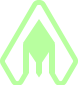
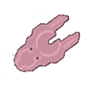

Cette section ne sera pas mise a jour avant la sortie de l'update Dark Néblua

Orion
Les modules de Commerce, vont venir s’équiper sur vos Vaisseaux de Transport (Transport Ship), et comme leurs noms l’indique, vont vous servir principalement à augmenter les revenus issus de vos Cargaisons. Ils servent également au transport de ressources plus avancés, ou en plus grande quantité.
Le Forage peut paraître inintéressant au premier abord, mais il est en réalité essentiel. C’est grâce aux modules de Forage, que vous allez récupérer de l’hydrogène, ressource nécessaire au déplacement des vos vaisseaux, a l’activation de certaines stations, et pour l’utilisation de vos modules. Il existe une bonne variété de modules de Forage pour vous aider dans cette tâche, chacun avec un fonctionnement bien précis.
Les armes, leurs principes est simple, elles permettent aux vaisseaux qui en sont équipés, de tirer et infliger des dégâts à leurs cibles, dans le but de les détruire. Il existe une petite variété d’arme, chacune avec ses avantages et inconvénient.

En addition de l’armement, un bouclier permet de protéger le vaisseau qui en est équiper. Il sont rapidement indispensable dans le jeu, la coque du vaisseau étant insuffisante dans la très grande majorité des cas.

Les modules de Soutient, proposent un panel d’actions très vaste, vous permettant de construire votre propre façon de jouer, en fonction de vos préférences et de vos goûts. Ils sont indispensable dans la plupart des cas, et seront souvent votre plus gros casse-tête en ce qui concerne le choix de vos équipements.
Les étoiles jaunes, sont le point de départ de tout joueur. Il s'agit de votre base, chacun possède la sienne, et ne pourra y être attaquer par d'autres joueurs. On y trouve des points de passages pour les autres étoiles, des planètes a améliorer, des cargaisons a distribuer, et parfois des cerbères a éliminer
Les étoiles rouge sont le principal mode de jeu de Hadès Star. Il s'agit de match PvE d'une 15aine de minutes, dans lesquels le but est de récupérer les artéfacts contenu dans les planètes et défendu par des forces cerbères de plus en plus puissantes

L'univers d'Hadès Star possède son propre vocabulaire et quantité de termes et abrévations. Pour un nouveau venu, il est très facile de se perdre dans les conversations des utilisateurs chevronés, voici donc un dictionnaire qui regrouppe les plus populaires.
La Galaxie d'Hadès est peuplée de vaisseaux aussi hostiles qu'inconnus. Étant une menace conséquante lors des diverses activités possibles, il est bon de connaître les spécificités de ces adversaires
Le début du jeu peut être assez déroutant dans le jeu, de part le fait d'un tutoriel assez simple. De ce fait les nouveaux joueurs sont facilement perdu et se demande souvant quel modules améliorer, comment faire ci ou cà
Dans la galaxie d'Hadès Star, les cargaisons sont un élément central, permettant a chacun d'amasser une quantité conséquante de crédits en une petite fenêtre de temps.